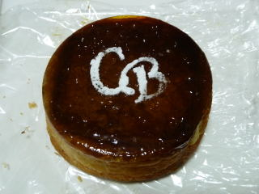
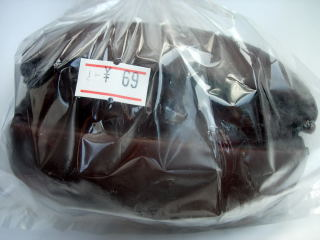
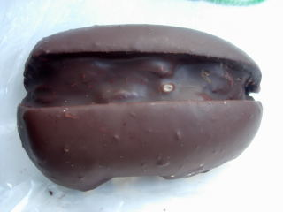
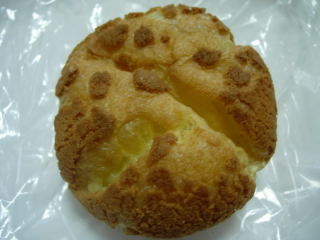
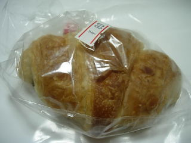
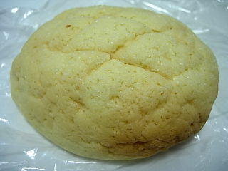
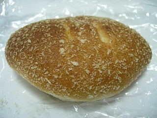

トライアルのクレームブリュレ
2010/10/25
大きなサイズのクレームブリュレです。

スーパーのベーカリーコーナーのブリュレなので、ちょっとオリジナルな感じです。
パンの中にクリームが詰めてあるので、クリームパン。その上にカチカチの砂糖の飴が乗っています。
とっても甘かったです。
サティー出雲店、ジャスコパラオ店があった所です。
2010/10/25
大きなサイズのクレームブリュレです。

スーパーのベーカリーコーナーのブリュレなので、ちょっとオリジナルな感じです。
パンの中にクリームが詰めてあるので、クリームパン。その上にカチカチの砂糖の飴が乗っています。
とっても甘かったです。
2010/8/25
チョコがいっぱいかかったパンが69円です。

安いですね。

チョコいっぱいなので、しっかり甘かったです。
クリームもちょっとあって美味しかったです。安くていいお菓子だって思いました。
2010/7/3
クッキーシューです。（79円）

ぐるっと全体がクッキーで、カッチカッチで重量感がありました。
ちょっと時間をおいても、湿気でふにゃっとならなくて食べ易かったです。
2009/12/11
24時間営業のトライアルにパンを買いに行きました。
ひょっとして朝パンを買いに行くと、出来たてのパンが並んでる？なんて期待して行ってみたんですが、朝7：30には出来たてパンは販売してませんでした。
温度が下がって袋詰めされたチョコ入りのクロワッサンが売ってたので買いました。

89円は安いですね。お買い得な気分が少ししました。
でもトライアルは広いですね。レジも1台しか動いてなかったので、ちょっと時間が長くかかりました。朝の忙しい時間の買い物には注意が必要でした。
2009/4/23
トライアル出雲店内にあるベーカリーコーナーでパンを買ったんですが、安いですね～。
オープン時の特別価格かもしれないですが、
メロンパン 59円
焼きカレーパン 89円でした。
メロンパンは、ちょっと固めのメロンパンでした。

昔のメロンパンはこんなのだったかな？って思いました。クッキー部分の砂糖味がメロンパンらしい味でした。
焼きカレーパンは、パンの中がポッカリと空洞になってて面白かったです。

値段が値段なのでしょうがないですね。中の具が少ないとパンが小さくなりそうな気がするんですが、空洞が出来て膨らむんですね。
近くのパン屋
ラピタ本店